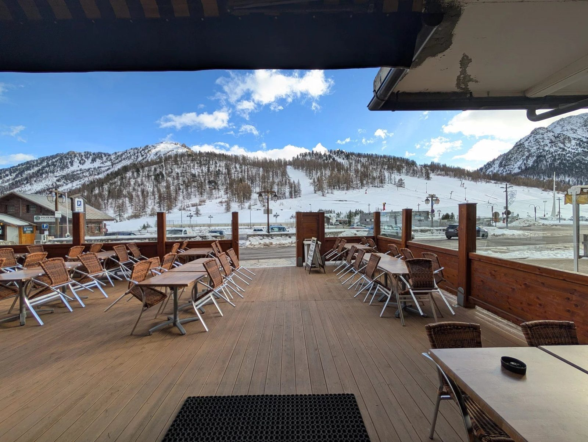

5 novembre 2026 · Territoire & marché
Névache, vallée de la Clarée : le village que la presse nationale vient de citer
Didier Moranval-Vincent · 1256 mots · lecture 5 min
Le 4 novembre, Biba Magazine a consacré un article à Névache, en haute vallée de la Clarée, en le présentant comme le village « aux plus beaux chalets du pays », dans un département classé le plus sain de France. Derrière le titre accrocheur, une question très concrète : que change cette lumière médiatique quand on cherche à acheter — ou à vendre — dans la vallée ?

L'essentiel
- Névache est cité par Biba Magazine le 4 novembre 2026 comme le village aux plus beaux chalets de France.
- Les Hautes-Alpes arrivent premières du classement 2026 des départements les plus sains, avec 8,60 sur 10, pour la deuxième année consécutive.
- Côté immobilier : plus de regards extérieurs, mais un marché étroit, contraint par un site classé et par la rareté du bâti ancien.
Ce que dit l'article
L'article, signé Élisabeth Sall, ne parle pas d'immobilier : il parle d'air pur, de mélèzes, de silence et de chalets « dignes d'un film de Noël ». Névache y est décrite comme l'anti-Paris : les sommets remplacent les immeubles, les sentiers les trottoirs. Rien de faux, et rien de nouveau pour qui vit ici — mais un rappel utile de ce que le village vend le mieux : un cadre.
Le reste de l'article s'appuie sur une étude menée par ZAVA, qui classe les 101 départements métropolitains selon des critères de santé et de qualité de vie : accès aux médecins et aux hôpitaux, pistes cyclables, commerces alimentaires, espaces verts, lieux de baignade, équipements sportifs, pollution.
Les Hautes-Alpes y sont premières, avec 8,60 sur 10, et conservent la place qu'elles occupaient déjà en 2025. Le département se distingue par l'accès aux soins — 526 médecins pour 100 000 habitants — et par l'offre de plein air : 274,13 sentiers de randonnée et 45,10 pistes cyclables pour 100 000 habitants. Pour situer, Paris arrive 74e avec 6,47 sur 10.
Où les chiffres s'arrêtent, où le terrain commence
Un classement dit la qualité d'un cadre de vie. Il ne dit rien de la disponibilité des biens, du prix au mètre carré, de l'état des toitures ou de la faisabilité d'une extension. C'est précisément là que le marché de Névache se distingue des stations voisines.
Premier point : la vallée est un site classé depuis 1992. Ce n'est pas un détail administratif. Toute intervention sur le bâti passe par un regard de l'architecte des bâtiments de France, les volumes extérieurs évoluent peu, et les parcelles constructibles se comptent. On ne « fait pas » de programme neuf à Névache ; on rénove, on restaure, on transforme un hameau.
Deuxième point : il n'y a pas de remontées mécaniques. Le domaine est nordique — environ 45 km de pistes — et le ski alpin se pratique à Montgenèvre, à une dizaine de kilomètres, ou à Serre Chevalier. Conséquence directe : le village n'est pas un marché de « station », avec sa cohorte d'investisseurs locatifs et de rotations rapides. Il attire des acheteurs qui viennent pour la vallée elle-même, pas pour un pied de piste.
Troisième point : le stock. Les hameaux — Ville-Haute, le village, Plampinet — comptent peu de biens, et encore moins de biens rénovés avec vue, soleil et terrain. Un chalet correct se compte parfois sur une main dans l'année. C'est ce qui explique des niveaux de prix qui surprennent les acheteurs habitués aux stations : on paie la rareté et le travail de rénovation déjà fait, pas la proximité d'un télésiège.
Ce que je vois arriver après ce type d'article
Chaque parution de ce genre produit le même phénomène : une vague de demandes de renseignements, souvent parisiennes, parfois genevoises ou milanaises, avec une question en tête — « qu'est-ce qu'on peut acheter là-bas ? » — et une réponse qui déçoit : peu de choses, et rarement ce qu'on imaginait.
Les profils, eux, sont stables. Une maison de famille pour trois générations, un bien de télétravail occupé à l'année avec un aller-retour régulier sur Briançon ou Turin, parfois un projet d'hébergement — chambres d'hôtes, gîte, résidence senior — dans un bâtiment assez grand pour être rentabilisé. C'est la catégorie de biens qui se présente ici : des volumes qu'on ne rentabilise pas en location classique, mais qu'on exploite — ou qu'on habite autrement.
Ce que la lumière médiatique change vraiment, c'est le niveau d'exigence des acheteurs. Ils arrivent avec des photos de magazine en tête et découvrent un bâti ancien, des accès parfois à viabiliser, des délais de travaux. Les dossiers qui se concluent sont ceux où le vendeur a préparé ses réponses : diagnostics à jour, devis de rénovation, servitudes, contraintes du site classé, coût réel du chauffage.
Le revers de la médaille
Il faut le dire aussi, parce que la presse ne le dira pas. Névache est à vingt kilomètres de Briançon par une route de vallée, enneigée plusieurs mois par an, et les services y sont ceux d'un village de montagne : peu de commerces, une école, un cabinet médical, l'hôpital à Briançon. La vie quotidienne y est magnifique et exigeante à la fois.
Le marché est peu liquide. Un bien atypique peut mettre des mois, voire des années, à trouver son acheteur — et la revente demande la même patience. Les annonces autour des JO 2030, avec Briançon retenu pour le village olympique, créent une dynamique d'image réelle ; elles ne garantissent aucune hausse mécanique des prix, en particulier dans une vallée protégée où l'offre ne peut pas augmenter.
Trois questions que l'on me pose
Faut-il acheter maintenant, avant que les prix ne montent ?
Il n'y a pas de bonne réponse générale : dans un marché aussi étroit, c'est le bien qui compte, pas le calendrier. Un bien surestimé restera invendu, JO ou pas.
Peut-on louer en saison ?
Oui, mais la clientèle est celle du ski de fond, de la randonnée et des vacances vertes — pas celle des semaines de ski alpin. La rentabilité locative n'a rien à voir avec celle d'une station.
Faut-il passer par un agent local ?
Pour un site classé, oui : les questions d'urbanisme, de servitudes et de travaux se traitent avec quelqu'un qui connaît les dossiers communaux, pas avec un portail national.
En résumé
Que la presse nationale cite Névache est une bonne nouvelle pour le territoire, et une bonne nouvelle pour la vallée : elle rappelle ce que nous avons — un cadre préservé, un air rare, une authenticité que les stations ont parfois perdue. Pour autant, un article de magazine ne fait pas un marché. Ce qui fait un marché, ici, reste ce qu'il a toujours été : peu de biens, des contraintes fortes, et des acheteurs qui savent exactement pourquoi ils viennent.
Vous cherchez dans la vallée de la Clarée ?
Ou vous y possédez un bien et vous demandez ce qu'il vaut aujourd'hui ? Le premier échange ne coûte rien et n'engage à rien.
Sources : Biba Magazine, « Adieu Paris : situé dans le département “le plus sain de France”, ce village abrite les plus beaux chalets du pays », Élisabeth Sall, 4 novembre 2026 · Étude ZAVA, départements les plus sains de France 2026.
Publié sur moranval.com. Les faits rapportés sont ceux de Biba Magazine du 4 novembre 2026 et de l'étude ZAVA 2026 ; l'analyse et les exemples locaux sont les miens.